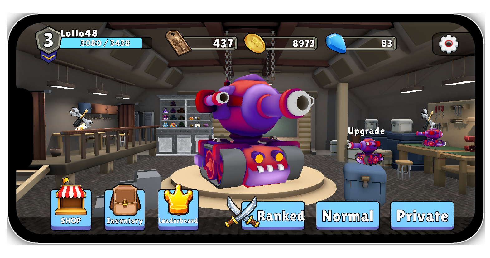
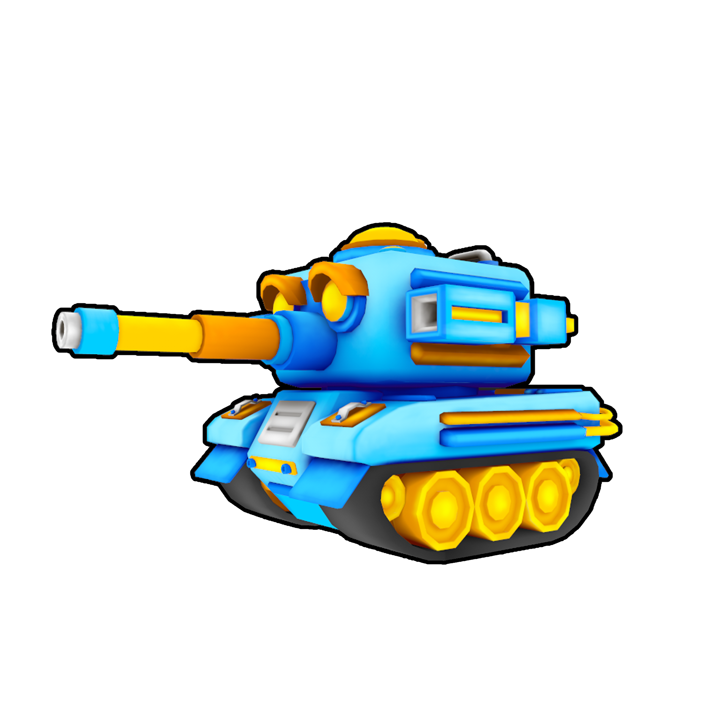
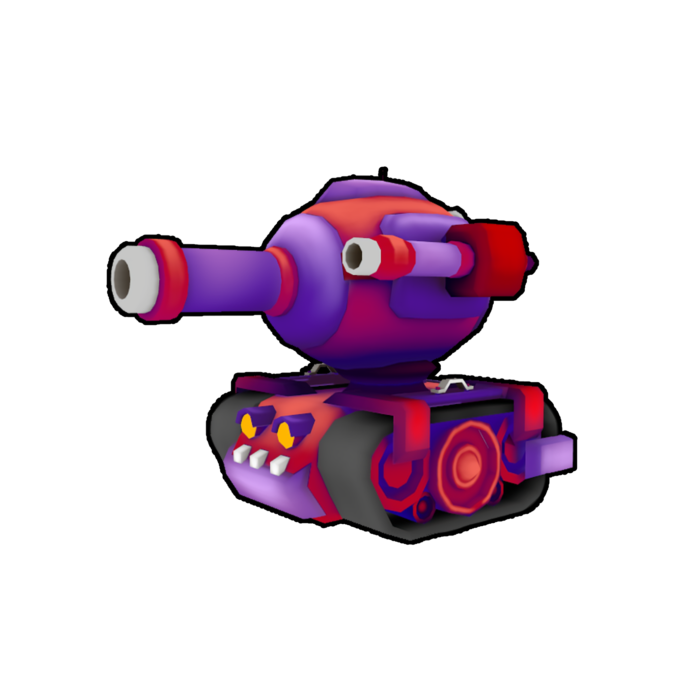
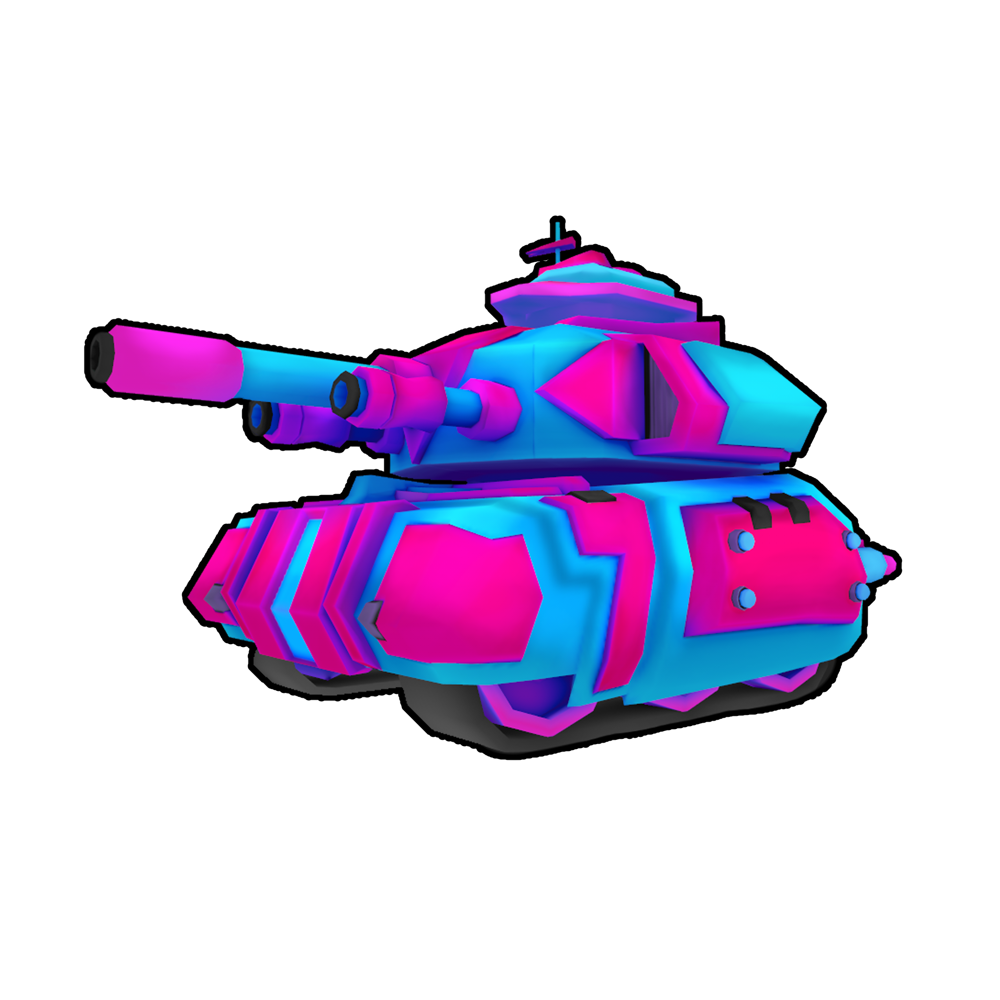
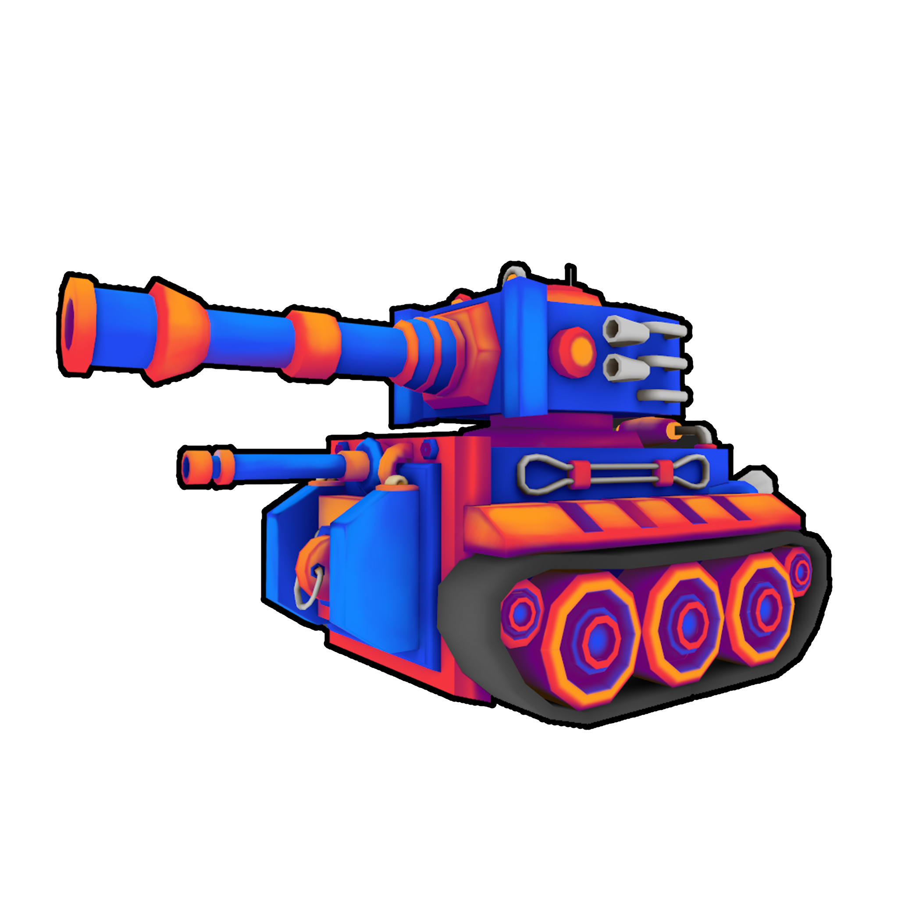
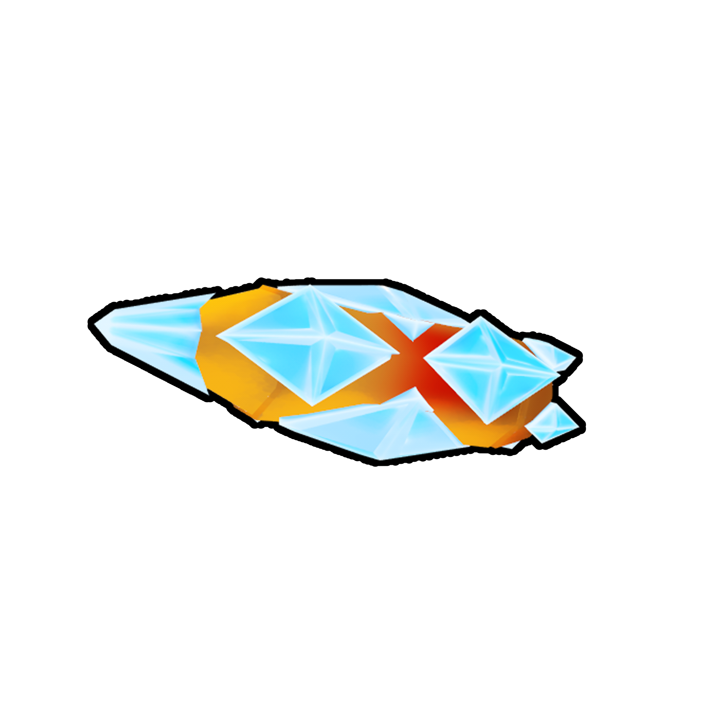
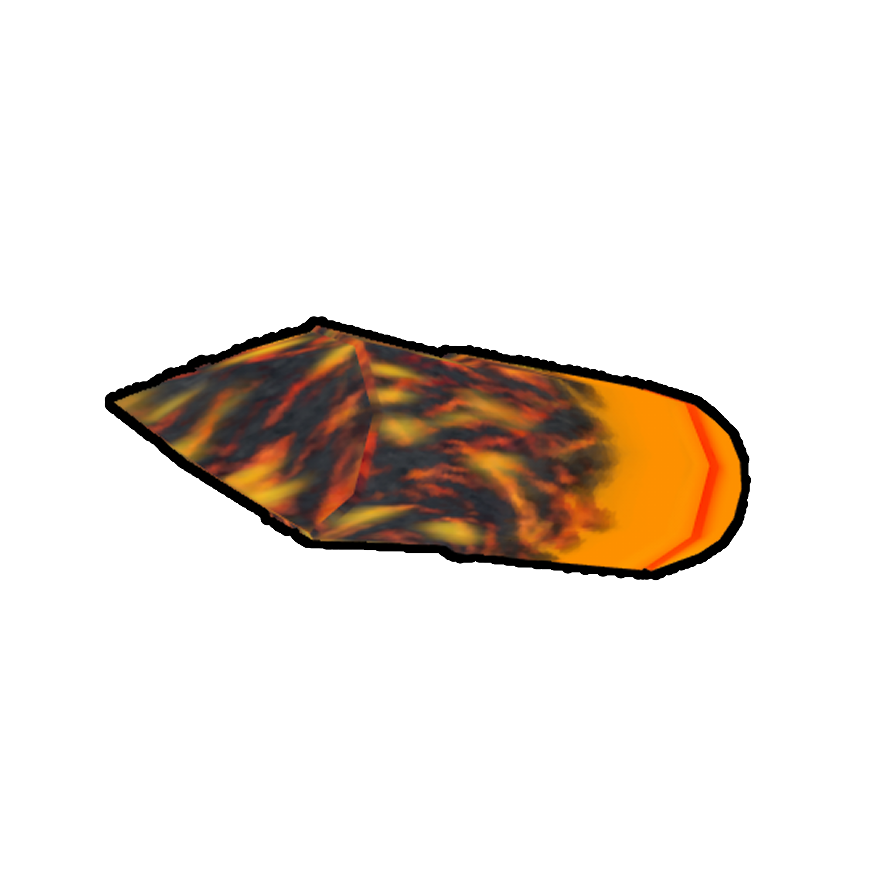
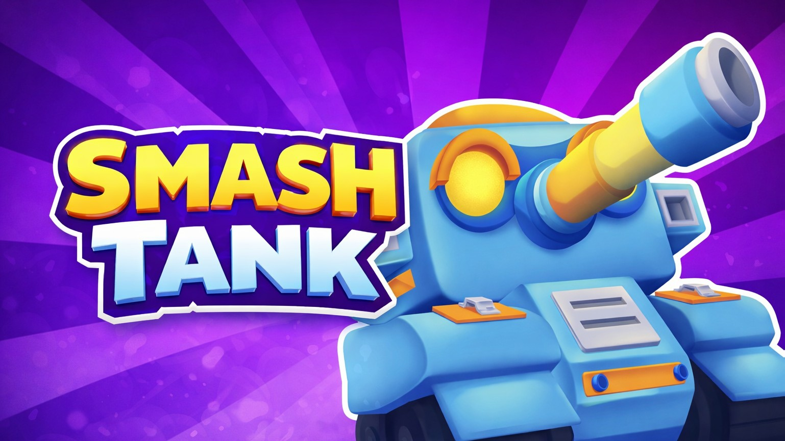

Tank control
Responsive tank movement designed for mobile input while keeping gameplay state compatible with the multiplayer architecture.
GAMEPLAY & NETWORK PROGRAMMING
A competitive mobile PvP tank arena game built in Unity. I developed the core gameplay, multiplayer architecture, backend integration and progression systems with a strong focus on responsive combat and maintainable networked code.
Smash Tank is built around short, readable PvP encounters where movement, aiming and firing need to feel immediate on a mobile device.
Responsive tank movement designed for mobile input while keeping gameplay state compatible with the multiplayer architecture.
Gameplay logic covers aiming, projectile firing, hit validation, damage and the feedback needed to keep combat readable.
Gameplay features are structured as modular systems so new tanks, equipment and abilities can be extended without rewriting the core loop.
Inventory, upgrades, rewards and player progression connect the match loop to persistent account data.

The networking layer is designed around one rule: the player should get immediate feedback, while authoritative gameplay still decides the final result.
Critical gameplay results such as projectile collision and damage are validated by the authoritative side instead of trusting the local client.
Latency-sensitive actions provide immediate local feedback so shooting feels responsive even before the authoritative result returns.
Unique shot identification and network timing keep predicted actions traceable and gameplay timing consistent between peers.
Projectile pools avoid constant runtime allocation and unnecessary spawn/despawn churn during repeated combat actions.
Networking stack: Unity Netcode for GameObjects with RPCs, NetworkVariables, network ownership and server-spawned gameplay objects.
The online flow connects the multiplayer session layer with persistent player identity and progression.
Unity Lobby is used to organize multiplayer sessions and the player flow before entering a match.
Unity Relay handles client connectivity without requiring players to expose or manually manage direct network endpoints.
Unity Authentication provides the session identity used by the online flow and ties the connected player to persistent data.
PlayFab supports account data, currencies, progression and persistent player information beyond a single multiplayer session.
The game supports a visually distinct tank roster while keeping the underlying gameplay systems reusable.






Smash Tank is the project where I combined gameplay programming, networking and backend work into one complete multiplayer foundation.
